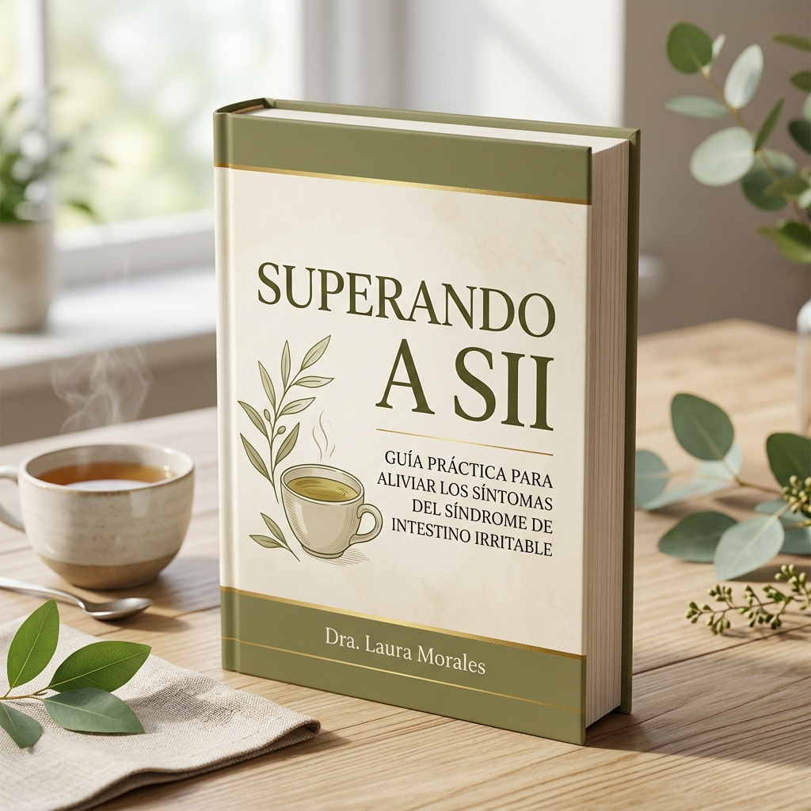

Acalme seu sistema nervoso hiper-reativo, domine cardápios e elimine o medo de comer fora. O guia prático com ferramentas reais para você recuperar a autonomia do seu corpo.
De R$ 49,99
Por apenas R$ 19,99
Pagamento único • Acesso imediato no seu e-mail

Para quem convive com a Síndrome do Intestino Irritável (SII), sair de casa ou aceitar um convite de jantar não é simples. O estresse ativa o sistema simpático, que envia alertas de perigo pelo nervo vago, alterando a motilidade e amplificando a dor. Esse ciclo não é frescura, é uma resposta fisiológica real.
Quando a cólica ameaça se instalar, a respiração diafragmática ativa o sistema parassimpático, reduzindo a dor em até 30% em poucos minutos. Siga o guia visual interativo abaixo:
O Ebook foi desenhado passo a passo para construir a sua independência e acabar com a ansiedade social alimentar. Conheça cada módulo:
Este módulo foi criado para interromper o conflito constante entre suas emoções e seu intestino. Descubra técnicas práticas para reverter sinais de crise em minutos.
3 a 5 linhas por dia para reconhecer os padrões de sensibilidade de forma dinâmica.
Chega de terrorismo alimentar. Informação gera escolha, e escolha gera autonomia real.
Comer fora não precisa ser uma experiência de ansiedade. Aprenda a analisar cardápios online como um verdadeiro detetive antes de sair de casa.
Pratos apresentados separadamente, com texturas previsíveis, facilitando a identificação do que está no prato.
Proteína limpa e sem molhos complexos. Legumes grelhados que mantêm o sabor definido.
Aprenda a fazer pedidos adaptados e responder a comentários de amigos de forma leve, natural e sem constrangimento.
73% das pessoas com restrições evitam pedir adaptações por medo de parecer exigentes. Mude isso.
Amigos de verdade respeitam. Quem insiste em comentar revela mais sobre si mesmo do que sobre você.
Construa uma barreira de segurança física com recursos práticos e sinta-se preparado para qualquer imprevisto.
Apoiam o processamento dos alimentos e reduzem o inchaço físico durante as refeições sociais.
Camomila, maracujá e erva-cidreira como sua âncora emocional antes do evento social.
O roteiro de prevenção e preparação para o seu primeiro evento social prático. Uma noite de socialização real com o intestino em paz.
Almoço entre 12h e 13h, jantar entre 18h30 e 19h30. Cozinhas menos pressionadas cometem menos erros.
Pausar, Mastigar, Colher. Três passos simples que evitam o inchaço e a distensão abdominal.
No livro, você aprende a não criar listas de proibição arbitrárias. Clique nas opções abaixo para simular o semáforo de sensibilidades:
Tolerado bem na maioria das vezes. Pratos limpos.
Exige atenção. O preparo ou a quantidade importam.
Evitar no social para prevenir desconfortos imediatos.
Escolha um item do semáforo para ver as dicas práticas e estratégias do Ebook sobre ele.
"Recusei vários casamentos e jantares por medo de ter crises de SII no caminho ou no local. Com a técnica da Respiração Diafragmática e o Kit de Resgate na bolsa, me senti segura para ir ao jantar de aniversário da minha irmã. Foi a primeira vez em 3 anos que comi fora e socializei em paz."
"O Mapeamento sem Terrorismo me libertou da paranoia alimentar. Eu vivia restringindo tudo, o que destruiu minha microbiota e piorou meus sintomas. Hoje uso as tabelas do semáforo, sei exatamente meus pratos seguros e peço alterações sem o menor constrangimento com os roteiros do livro."
"Minha ansiedade social alimentar era gigantesca. O medo dos comentários dos outros na mesa me destruía por dentro. O capítulo do 'Escudo Social' foi o divisor de águas na minha vida. As respostas curtas e leves desarmam os palpites dos amigos na hora. Ebook fantástico!"
O que você vai receber ao adquirir o Ebook hoje:
Acesso digital imediato em PDF. Compra única, sem assinaturas.
Aproveitar Oferta EspecialNossa prioridade é o seu bem-estar e a sua tranquilidade social. Por isso, você tem 7 dias inteiros para ler o Ebook e praticar os protocolos de respiração e mapeamento. Se você achar que as técnicas não trouxeram mais controle ou se não estiver 100% satisfeito, basta solicitar o reembolso na plataforma e devolvemos cada centavo, sem perguntas ou burocracia.
O produto é 100% digital, entregue em formato PDF de alta qualidade. Você pode ler no seu celular, tablet, computador ou até mesmo imprimir se preferir ter o material em mãos.
O envio é automático e imediato. Assim que o pagamento for aprovado (o Pix é aprovado em segundos), você receberá um e-mail com as instruções de download direto da plataforma Kiwify.
Sim. O foco principal do método é treinar o sistema nervoso autônomo (através do nervo vago) e fornecer ferramentas de segurança física e social. Ele atua exatamente no elo entre ansiedade e reatividade intestinal, que costuma ser o grande vilão dos sintomas em ambientes públicos.
É simples. Se você decidir que o material não é para você dentro de 7 dias a partir da compra, basta acessar a plataforma de pagamento ou nos enviar um e-mail e processamos o reembolso imediato de 100% do valor pago.